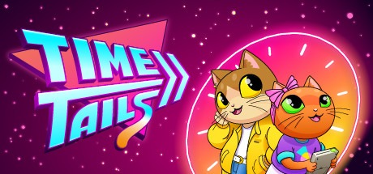
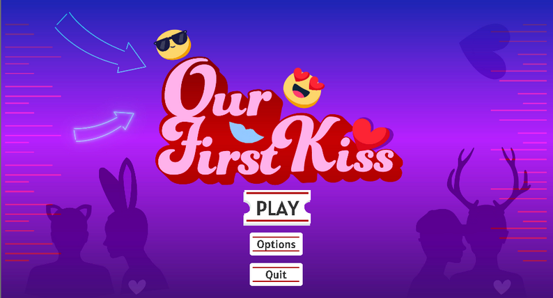

My name is Lex Yu and I'm an undergraduate at the University of Southern California studying
Computer Science (Games)
an interdisciplinary program that includes the curriculum of the standard CS major, plus game design and game programming classes.
Below are some projects I've worked on! (For my employment/everything resume, please email me at lsyu@usc.edu.)

I worked on Time Tails during my internship at Snowbright Studio! I programmed two of the levels, the menus, and the outro (Unity/C#). Time Tails is a kids 2D point and click adventure partially funded by the US Dept. of Education, and it includes history lessons and teaches players some basic features of the Unity engine.

I was the primary programmer on Our First Kiss, another students' Masters Thesis project (Unity/C#, I did software only). It's a festival (or you can play it at home with a friend or partner) game about performing affection and wordlessly communicating to time your first kiss at a movie date! I programmed the kissing mechanic, the color saturation and music/film clip changes, the keyboard controls remapping, the accessories selection, and the ending.